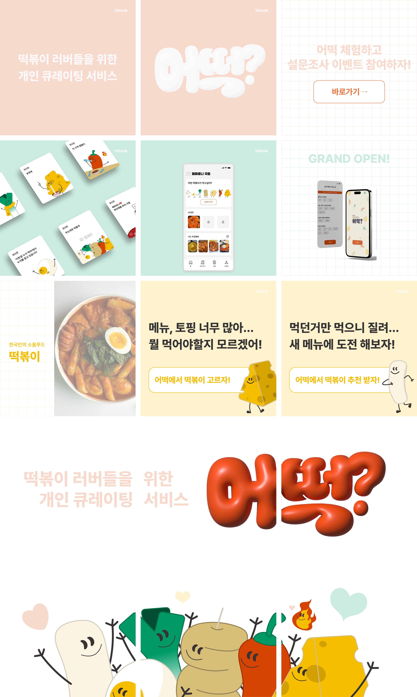
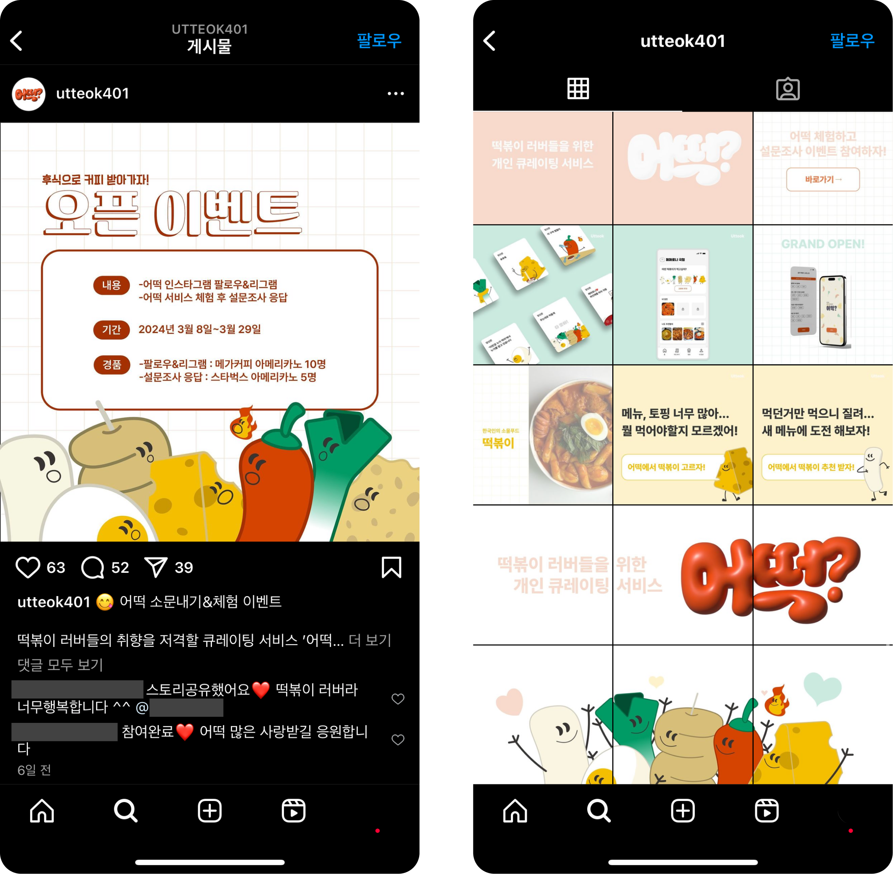

ARCHIVE
어떡 홍보 인스타그램 카드
2026.02
디자인 100%(일러스트레이터)
Background
해커톤에서 주어진 열흘만에 성공적으로 런칭을 한 후, 실제 사용자들의 의견을 듣기 위해 실사용자에게 설문조사를 요청했습니다.
이 과정에서 카드 콘텐츠를 제작해 인스타 채널운영, 광고 과정을 경험해보았고 서비스 고도화를 위한 의견 또한 들을 수 있었습니다.

Detail
실제 운영했던 인스타그램 피드 스크린샷입니다.
